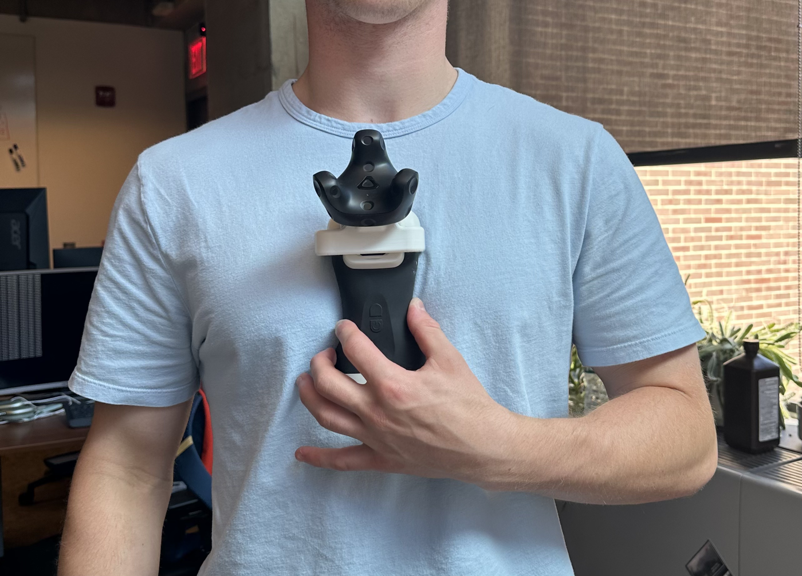

2D POSE GUIDANCE
Study Mode — Calibrate

Orient probe as shown. Press Calibrate when ready.
Study Mode — Practice
Practice phase. Move the probe freely.
Press Ready when comfortable.
Study Mode
Trial 1 of 3
Study Mode — Preference
This modality was intuitive
Study Mode
Block complete. Returning to launcher…
Time
3:00
Score
0
Aligned
0/6
UNCALIBRATED
CURRENT
TARGET
waiting for pose source...
X
--
--
Y
--
--
Z
--
--
ROLL
--
--
PITCH
--
--
YAW
--
--
1/Q X +/-
2/W Y +/-
3/E Z +/-
4/R Roll +/-
5/T Pitch +/-
6/Y Yaw +/-
Move the physical tracker to align the red current reticle with black.
connecting...